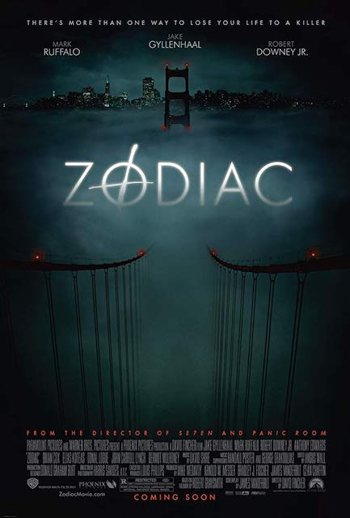

Before Le Wagon, I worked in tech for 4 years, as an analyst and later on as a product manager. Joining Le Wagon to start an exciting new chapter, possibly on the entrepreneurial side.
See for yourself
Cast Away - 2000Obsessively punctual FedEx executive Chuck Noland (Tom Hanks) is en route to an assignment in Malaysia when his plane crashes over the Pacific Ocean during a storm. The sole survivor of the flight, (...) |
|
The Game - 1997Nicholas Van Orton (Michael Douglas) is a successful banker who keeps mostly to himself. When his estranged brother Conrad (Sean Penn) returns on his birthday with an odd gift -- participation in a personalized, real-life game -- Nicholas reluctantly accepts. Initially harmless, (...) |
|
|  |
Zodiac - 2007In the late 1960s and 1970s, fear grips the city of San Francisco as a serial killer called Zodiac stalks its residents. Investigators (Mark Ruffalo, Anthony Edwards) and reporters (Jake Gyllenhaal, Robert Downey Jr.) become obsessed with learning the killer's identity and bringing him to justice. (...) |